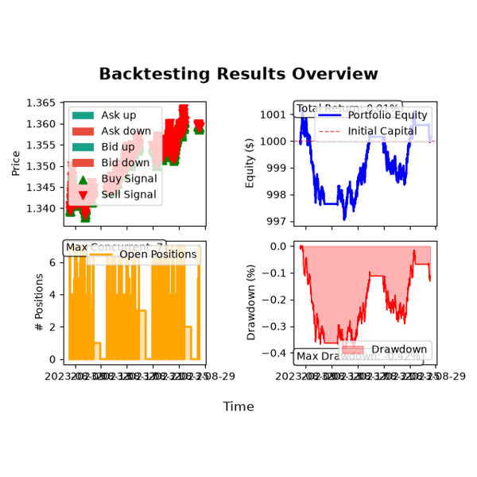
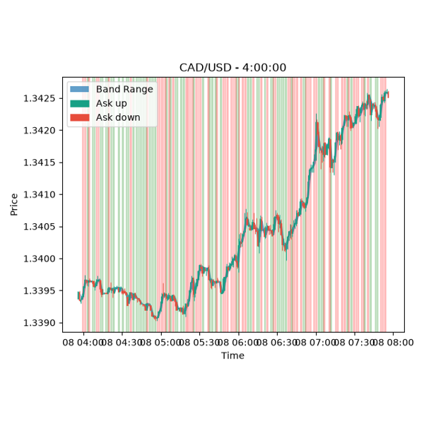

Examples: Tutorials#

Automated Backtesting with Bollinger Bands Strategy
Automated Backtesting with Bollinger Bands Strategy


Trade Ledger and Position Analytics
Trade Ledger and Position Analytics

Complete Trading Strategy Workflow with Bollinger Bands
Complete Trading Strategy Workflow with Bollinger Bands